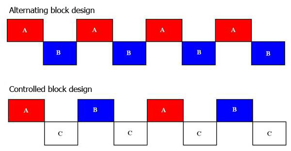
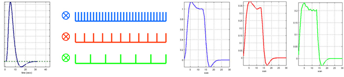
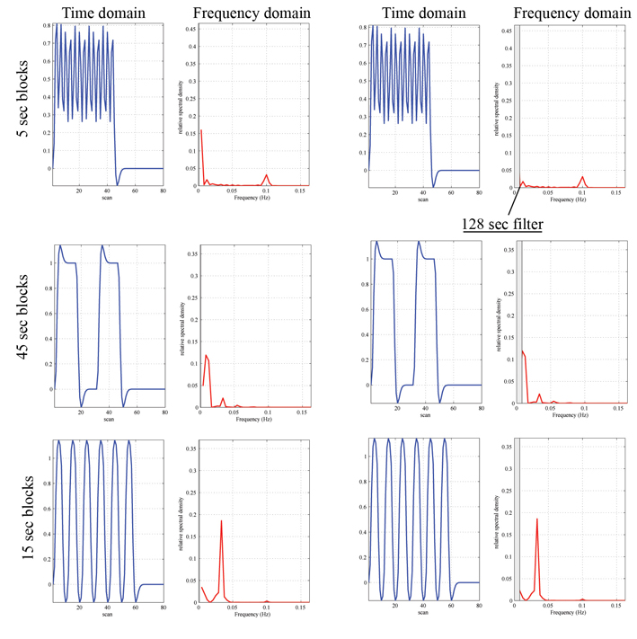
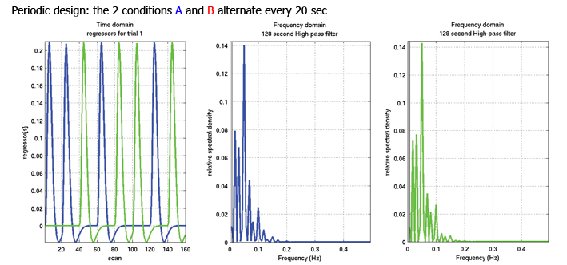
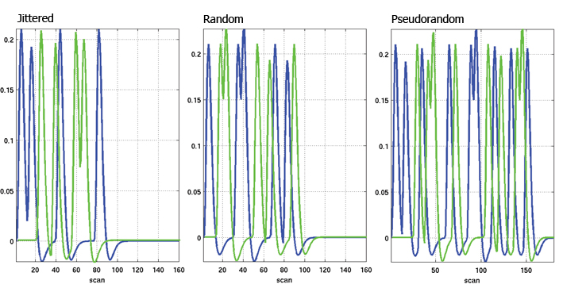
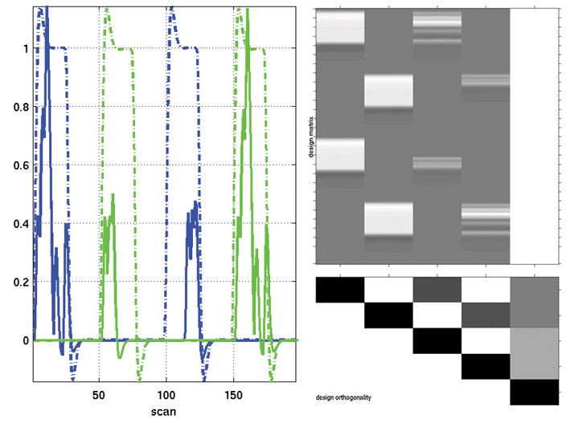
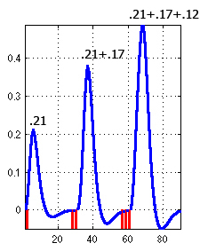

fMRI designs
In fMRI, it exists 3 main types of design: blocked, event-related or mixed. This classification operates on the way stimuli are presented. The optimization of these designs refers mainly on how to increase their power. In this page, fMRI designs are presented and optimized parameters proposed. However, I do not explain further how and why these parameters. For this, please visit the (excellent) web page of Richard Henson.
Block designs
Block designs are well suited to localize functional areas and study steady state processes (e.g. attention). One can distinguish alternating blocks from controlled block designs.
Alternating designs: conditions A and B are alternated in distinct blocks Þ only useful for determining which voxels show differential activity as a function of the variables (i.e. the difference between A & B).
Controlled block designs: conditions A and B are separated by null-blocks, i.e. a control condition C. Þ allow the identification, in addition, of voxels activated by each condition separately and in both conditions.

Block designs are powerful in terms of detection, i.e. to determine which voxels are activated. The advantage of short ISI is that the response is greater than for long ISI because responses to different stimuli summate thus increasing the response amplitude. On the other hand, because of summation of the hemodynamic responses iin time, block designs have a poor estimation power, i.e. a weak ability to determine the time course of the response.

Example of hrf summation: 1 stimulus every 1 sec / 3 sec / 5 sec (TR: 2.5 sec Highpass filter: 128Hz).
Optimization: Signal strength varies with the length of blocks. With short blocks (less than 10s), the signal does not return to baseline during null-blocks decreasing the strength of the signal. With long block lengths, a large response is evoked during the task blocks and the response returns to baseline during null-blocks. However, the detection power increases with high frequency alternation because i) it depends on the number of events/blocks and ii) the noise in the BOLD time course which occurs mainly at low frequencies. Blocks with durations longer than the hemodynamic response reach a compromise between signal strength and noise (optimal 16s)

Event related deasigns
Each event is separated in time by an inter-stimulus interval ranging from few sec to 20s. Event related designs are based on the assumption that neural activity will occur for short and discrete intervals. Such designs attempt to measure transient changes in brain activity. Unlike blocked designs, stimuli are presented in a random order rather than an alternating pattern offering a higher flexibility in experimental terms.
Estimation power of event-related design is often good as they allow to inquire the hemodynamic shape for each condition and compare parameters such as the amplitude or the timing between conditions. By contrast, the detection power is relatively weak in comparison with blocked design. This is explained by the simple fact that experimental power depends on the number of events that are averaged.

In rapid event related designs, stimuli are closely spaced in time, i.e. there is an overlap of the hemodynamic responses. Raw signal uninterpretable but trials can be in a total random sequence such as it is highly resistant to habituation, set, and expectation. By introducing ‘null events’ one creates differential ISI, i.e. differential overlaps between hemodynamic responses which allows a full characterization of this response. Different techniques exist to 'randomize' the stimuli alternation.
Jittered designs rely on the likelihood of a given ISI following each stimulus (stationary stochastic designs).
Randomized designs rely on the likelihood of a stimulus being presented at each time point
Semirandon designs rely on the systematic probability variation of stimuli over time (dynamic stochastic designs)

Mixed designs
Stimuli are displayed in discrete blocks which allows investigating sustained processes and brain responses (state-related processes). This however is different from semirandom designs where, whatever the stimulation rate, we assume that the process is always the same (looking for transient activity for each stimulus). Within each block multiple types of events occurs and because there is different types of stimuli, transient responses are also likely to occurs. Therefore, mixed designs can investigate interaction between processes working at different time-scales.
Adaptation designs
fMRI adaptation designs (afMRI) use the refractory period to enquire functional differences within a given region. The predicted hemodynamic response relies often on a linear prediction. This means that for an impulse (a short-duration stimulus), the hemodynamic system responds in the same manner. The parameters of the hemodynamic response are then directly interpreted as reflecting both the intensity and the duration of the neural response given the scaling (the magnitude of the system output is proportional to the system input) and superposition (the total response to a set of inputs is the sum of individual inputs) properties of linear systems.
The hemodynamic response is linear for ISI > 6s and nearly linear down to ISI ~ 3/4s. If the ISI is short, the response to a subsequent stimuli is weaker than for a longer ISI (Boynton and al., 1996, J Neurosci 16, 4207-4221; Dale & Buckner, 1997, Hum Br Map 5, 329-340). This phenomenon is known as the hemodynamic refractory period. Such a refractory period has been used to investigate neural adaptation effects.
Case A: object 1, object 2, object 3, ISI 2s, all same orientation = neurons that code objects. It exists an adaptation effect such as for one simulus the BOLD response = 0.21, for two stimuli = 0.38 and for three stimuli = =0.49.
Case B: object1, object2, object3, ISI 2s, the last one has different orientation – If the neural coding is different, for objects of different orientation there is no adaptation and case B > case A. (BOLD=0.21+0.17+0.21=0.59).
Issue: an area showing an adaptation effect can receive inputs from an area which does code stimulus properties (real adaptation effect) but does not by itself has neural specificity.
Altjhough most adaptation designs rely on some sort fast-event related designs, Aguirre (Aguirre, NeuroImage, 35, 2007) demonstrated that on can use a continuous stimulation where stimuli change their properties from one trial to the other, i.e. a design where we look at the effect of the previous stimulus on the current response (carry-over design).